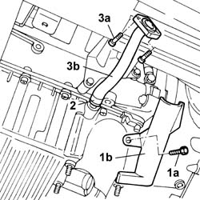

1084B42 Engine oil return pipe to turbocharger
- Path
- Procedures > 10 ENGINE > 1084 ENGINE LUBRICATION > 1084B ENGINE OIL LUBRICATION CIRCUIT > 1084B42 Engine oil return pipe to turbocharger
- Kind
- repair procedure (removal / refitting; the operation number is the code)
- Applies to
- engines: 2.0 TB; all production periods
- Interactive page
- https://sloeber94.github.io/elrnDB-lThss/en/#/499286
Applies to: engines: 2.0 TB; all production periods
 Removing
Removing
 Refitting
RefittingSee in Op. 7040D50 ENGINE COMPARTMENT UPPER SOUND INSULATION SHIELD - R.R.
See in Op. 7055B54 PROTECTION/GUARD under engine - R.R.
See in Op. 1080B40 CATALYTIC PRECONVERTER - R.R.
See in Op. 1072C44 Exhaust manifold heat shield on BULKHEAD - R.R.
See in Op. 1088E10 Radiator cooling FAN - R.R.
See in Op. 1048A10 COMPLETE AIR FILTER -R.R.
See in Op. 1048A50 air inlet pipe to turbocharger - r + r
See in Op. 1048A21 AIR INLET HOSE FROM INTAKE TO FILTER - R.R.
See in Op. 1016A40 Ignition COIL COVER on cylinder head - R.R.

Applies to: engines: 2.0 TB; all production periods
Refitting
RemovingSee in Op. 1080B40 CATALYTIC PRECONVERTER - R.R.
See in Op. 1072C44 Exhaust manifold heat shield on BULKHEAD - R.R.
See in Op. 1088E10 Radiator cooling FAN - R.R.
See in Op. 1048A10 COMPLETE AIR FILTER -R.R.
See in Op. 1048A50 air inlet pipe to turbocharger - r + r
See in Op. 1048A21 AIR INLET HOSE FROM INTAKE TO FILTER - R.R.
See in Op. 1016A40 Ignition COIL COVER on cylinder head - R.R.
See in Op. 7055B54 PROTECTION/GUARD under engine - R.R.
See in Op. 7040D50 ENGINE COMPARTMENT UPPER SOUND INSULATION SHIELD - R.R.
Topics linked from this page (9)
- 1016A40 Ignition COIL COVER on cylinder head - R.R.
- 1048A10 COMPLETE AIR FILTER -R.R.
- 1048A21 AIR INLET HOSE FROM INTAKE TO FILTER - R.R.
- 1048A50 air inlet pipe to turbocharger - r + r
- 1072C44 Exhaust manifold heat shield on BULKHEAD - R.R.
- 1080B40 CATALYTIC PRECONVERTER - R.R.
- 1088E10 Radiator cooling FAN - R.R.
- 7040D50 ENGINE COMPARTMENT UPPER SOUND INSULATION SHIELD - R.R.
- 7055B54 PROTECTION/GUARD under engine - R.R.